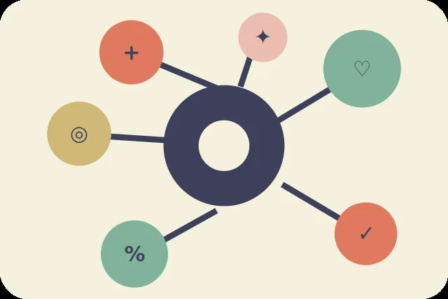

Откуда взяты данные и как их читать
Открытый источник, способ подготовки и ограничения важны не меньше красивой диаграммы. Здесь описано, что известно о показателях и что нельзя заключить из отдельных статистических связей.
World Happiness Report 2024
Основу ресурса составляет набор World Happiness Report 2024 на Kaggle ↗. В нём предусмотрены таблица рейтинга за 2024 год и более ранние годовые наблюдения. Для подготовки данных сначала использованы общедоступные копии CSV на GitHub; 21 октября 2026 года исходный архив независимо скачан напрямую из Kaggle. Оба CSV побайтово совпали с использованными копиями (SHA-256 одинаков); проверка 143 записей среза и 2363 годовых наблюдений также не обнаружила расхождений по ключам и оценкам. Результат подтверждён отдельной проверкой GitHub Actions. Условия прав на повторное распространение данных рассматриваются отдельно.
Первоначальные исследования и методологические пояснения опубликованы на официальном сайте World Happiness Report ↗. По методике оценки жизни респонденты отвечают на вопрос с лестницей Кантрила от нуля до десяти. Опубликованные рейтинги и годовые значения отличаются по периоду усреднения.
Как обработаны два исходных файла
Для согласования таблиц названия стран сопоставлены по английскому ключу. В справочник добавлены русские названия и региональные группы, а пропущенные значения сохранены как null. Срез 2024 года используется для актуального опубликованного рейтинга и вкладов факторов. Годовые наблюдения 2005–2023 служат только для графиков динамики и пересчитанных исторических рейтингов.
Последовательность обработки зафиксирована в ноутбуке для Google Colab, находящемся в папке notebooks/ репозитория. Сохранены три JSON-файла: справочник стран, годовые наблюдения и рейтинг. Они загружаются в браузере через fetch(), без серверного API и базы данных.
Посмотреть ноутбук предобработки ↗
Почему данные требуют осторожности
Крым на карте показан в составе Украины в соответствии с её международно признанными границами, подтверждёнными резолюцией Генеральной Ассамблеи ООН 68/262. Исходная карта Natural Earth по умолчанию ориентируется на фактический контроль территорий, поэтому картографический полигон Крыма в проекте перенесён из геометрии России в геометрию Украины. При наведении Крым отображается как часть Украины и использует опубликованный показатель Украины; отдельного показателя для Крыма набор не содержит. Карта главной страницы использует обзорные границы Natural Earth из общественного достояния и показывает 137 стран контурами, а 6 небольших стран и территорий — точками. Все цвета берутся из опубликованных оценок World Happiness Report 2024, а серые области означают отсутствие соответствующей записи. Эти условные границы не являются политическим заявлением. В разные годы число стран и доступность значений меняются. Отсутствующий показатель не означает нулевую оценку, а малая разница рейтингов не обязательно является содержательно значимой. Шесть вкладов в модели отчёта 2024 года нельзя напрямую сравнивать с необработанными годовыми значениями того же названия.
Диаграмма рассеяния описывает совместное распределение признаков, но не устанавливает причинно-следственную связь. Итоги персонального калькулятора зависят от выбранных весов и диапазона нормирования. Сайт предназначен для образовательного анализа, а не для составления рейтинга стран по условиям миграции, предоставления политических оценок или рекомендаций.
Основные термины
- Оценка жизни
- Средняя самооценка человеком собственной жизни, полученная в ходе социологического опроса с использованием числовой шкалы от нуля до десяти. Показатель характеризует общее восприятие жизненной ситуации, а не настроение в конкретный момент. При сравнении стран учитываются период наблюдения и методика усреднения.
- Лестница Кантрила
- Исследовательский инструмент, при котором респондент мысленно представляет лестницу от наихудшей возможной жизни до наилучшей. Нижней ступени соответствует ноль, верхней — десять. Человек выбирает ступень, наиболее точно описывающую его текущее положение. Полученные ответы используются для оценки субъективного благополучия населения.
- ВВП на душу населения
- Экономический показатель, который соотносит объём созданного в стране валового внутреннего продукта с численностью её населения. Он помогает описывать материальные условия на макроуровне, но не отражает распределение доходов между людьми. В модели World Happiness Report необходимо учитывать единицы и преобразование этого показателя.
- Социальная поддержка
- Характеристика того, считает ли человек возможным получить помощь от родственников, друзей или других людей в трудной ситуации. Она отражает не количество социальных служб, а воспринимаемую доступность поддержки. Для оценки связи с благополучием показатель рассматривается вместе с другими условиями и ограничениями опроса.
- Здоровая продолжительность жизни
- Оценка ожидаемого числа лет, которые человек может прожить в относительно хорошем состоянии здоровья. Этот показатель отличается от общей ожидаемой продолжительности жизни и учитывает ограничения здоровья. В разных файлах датасета могут приводиться исходная величина в годах и статистический вклад в модель оценки жизни.
- Свобода выбора
- Субъективная характеристика того, насколько человек удовлетворён возможностью самостоятельно принимать важные решения о собственной жизни. Она не является прямой оценкой политического устройства или юридических свобод государства. При исследовании благополучия показатель помогает анализировать воспринимаемую самостоятельность и должен интерпретироваться в контексте опроса.
- Щедрость
- Один из факторов, рассматриваемых в World Happiness Report для описания социального поведения. Он связан с добровольной помощью другим людям и пожертвованиями. Значения могут зависеть от особенностей вопросов и статистической обработки. Поэтому шкалу щедрости нельзя без дополнительного объяснения приравнивать к доле благотворительных расходов.
- Восприятие коррупции
- Показатель, отражающий субъективные представления респондентов о распространённости коррупционных практик в государственных структурах или деловой среде. Он не совпадает с количеством зарегистрированных преступлений и зависит от формулировок опроса. В опубликованном срезе значение объясняющего фактора представлено не так, как исходный годовой показатель.
- Корреляция
- Статистическая характеристика направления и силы совместного изменения двух переменных. Положительная корреляция означает тенденцию к одновременному увеличению значений, отрицательная — к разнонаправленному изменению. Наличие корреляции само по себе не доказывает причинно-следственную связь, поскольку на обе переменные могут воздействовать дополнительные обстоятельства.
- Пропущенные данные
- Записи, для которых конкретный показатель отсутствует в исходном датасете или не может быть достоверно определён. Отсутствие значения не равнозначно нулю. При подготовке JSON такие поля сохраняются как null, а в интерфейсе сопровождаются текстом «нет данных», чтобы пользователь не сделал ошибочный статистический вывод.
О проекте
Ресурс разработан как учебная курсовая работа по дисциплине «WEB-дизайн» в Приднестровском государственном университете им. Т. Г. Шевченко. Студент — Канивец Егор, группа 301. Используемый технологический стек: HTML5, CSS3, JavaScript, Chart.js, JSON. Векторные иллюстрации подготовлены специально для интерфейса.
Фотографии городской среды используются с атрибуцией авторов и на условиях Creative Commons Attribution-ShareAlike 4.0: JIP (Хельсинки), Maksym Kozlenko (Токио), DiscoA340 (Париж). Применено масштабирование и перекодирование JPEG в WebP, обработанные версии сохраняют лицензию CC BY-SA 4.0. Полные сведения об авторстве и оригиналах ↗.
Первичный источник статистики: World Happiness Report 2024; доступ к зеркалам CSV и дополнительным материалам указан в файле data/README.md. Статус лицензирования исходного Kaggle-набора и соответствие зеркал требуют контрольной проверки до публикации окончательной версии.
Перейти от методики к исследованию
Вернитесь к каталогу и изучите страны с пониманием того, где заканчиваются данные и начинаются интерпретации.